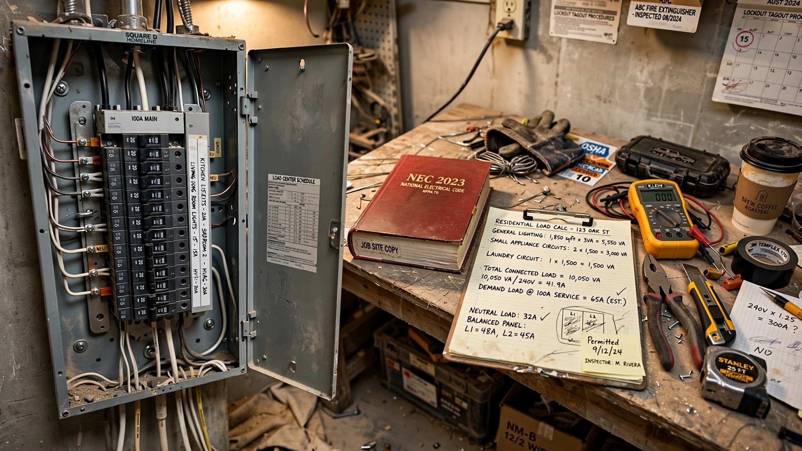

The National Electrical Code Just Cut Your Home's Load Rating by 33 Percent. Your Electrician Is Probably Still Using the Old Number.

Two load calculations walked into a 5,000-square-foot home last month, and they disagreed by 20.5 amps. Under the 2023 National Electrical Code, the general lighting and receptacle load came out to 15,000 volt-amperes, which works out to 62.5 amps on a 240-volt service. Under the 2026 NEC, published in October 2025, the same home calculates at 10,000 volt-amperes. Forty-two amps. Same house, same appliances, same number of light switches, and a gap wide enough to change the size of the service entrance created entirely by updating a single number in a table that most homeowners have never seen and most electricians consult without questioning.
One number changed. 3 became 2.
For decades, the NEC assumed every square foot of dwelling space required 3 volt-amperes of electrical capacity for general lighting and receptacles. Section 220.41 in the 2023 edition, now renumbered to 120.41 in the 2026 edition, set that rate as the floor for calculating how much electrical service a home needs — bigger number means bigger panel, thicker conductors, costlier service entrance equipment, and none of it optional. That rate hadn't moved in a generation, even as the lights inside American homes changed from 60-watt incandescents to 8-watt LEDs drawing one-seventh the power.
What finally moved it? Data. Researchers at Lawrence Berkeley National Laboratory measured actual lighting and receptacle loads in 896 occupied dwellings across the United States and found a median density of 2.3 watts per square foot. Not a model. Not a projection from builder specifications. Not a theoretical maximum for a house where every outlet runs a space heater simultaneously. Measured load from real homes with real families running real dishwashers, and the number came in 23 percent below what the code had been requiring builders to wire for since the Clinton administration.
After reviewing the data through First Revision FR-8013 and Public Input PI-3236 during the 2026 development cycle, the NEC committee concluded that the old rate no longer reflected how Americans actually use electricity and dropped it to 2 VA per square foot.
What the change actually does to your build
Consider a more typical new-construction home at 2,500 square feet. Under the old rate, the general load calculation produced 7,500 VA, or 31.25 amps, a figure that helped determine whether the builder specified a 200-amp or 400-amp service entrance. Under the new rate, it produces 5,000 VA, or 20.83 amps. That 10.4-amp reduction in the general load portion of the overall service calculation could be the difference between a 200-amp service fitting comfortably and a 200-amp service coming up short, which historically meant upgrading to a 400-amp service at an installed cost of $2,000 to $6,000 for the panel alone, according to 2026 pricing data from Angi and This Old House. Factor in utility coordination, new service entrance conductors, a potential transformer change on the utility's side, and trenching for larger conduit, and the total cost of a service upgrade from 200 to 400 amps can reach $10,000 to $30,000 in some markets, per Schneider Electric.
A 10-amp swing in the general load portion of the service calculation, a number that sounds trivial until you learn what it costs, is the difference between writing a four-figure check and a five-figure one.
The branch-circuit floor nobody is talking about
Drop the VA rate, save on service sizing, call it a day. Except the NEC committee anticipated exactly the problem that simplistic reading would create and installed a safeguard that almost no trade coverage has mentioned.
New Section 120.13, which did not exist in the 2023 edition, requires a separate calculation for determining the minimum number of branch circuits in a dwelling unit. That calculation still uses 3 VA per square foot. The math for a 2,500-square-foot home: 2,500 times 3 VA equals 7,500 VA, divided by 120 volts, equals 62.5 amps. At 15-amp circuits, that mandates at least five general-purpose branch circuits; at 20-amp circuits, at least four. Those branch circuits come on top of the separately required small-appliance circuits (minimum two), laundry circuit (one), bathroom circuit (one), and garage circuit (one), which Section 210.11(C) still mandates independently.
Deliberate. Elegant, even. Section 120.41 lowers the macro calculation that determines your service entrance sizing, which is where the real money lives, while Section 120.13 preserves the micro calculation that determines how many circuits run through your walls, which is where the actual fire risk lives. Smaller service, same number of outlets. The committee found a way to reduce the cost of building a home without reducing the safety of living in one, and the fact that almost no trade coverage has explained how they pulled it off is itself a failure of construction journalism.
Power Control Systems change the math again
The load calculation reduction matters. But for homeowners electrifying an existing home, adding solar panels, an EV charger, a heat pump water heater, and an induction range to a house built when the biggest electrical decision was which side of the garage the dryer plug went on, a different NEC 2026 provision may matter more.
Article 130, relocated from the former Article 750 as part of the NEC's ongoing decade-long reorganization from 9 chapters to 20, codifies Power Control Systems. A PCS is not the same as the energy management systems some homeowners already use, and the distinction is critical for anyone trying to use these provisions on a permit application. An EMS monitors and controls power for efficiency or demand response — a nice-to-have. A PCS prevents overload of services, feeders, and conductors through automatic controls with fail-safe operation. It substitutes for infrastructure, and the code now says so explicitly.
Under Article 120, engineers and electricians can now use PCS current setpoints directly in load calculations for controlled loads, which means the calculation reflects what the equipment actually draws under managed conditions rather than the worst-case nameplate rating. If a listed PCS device limits your EV charger to 24 amps when your heat pump is running and allows 48 amps when it is not, you can calculate the EV charger at the PCS setpoint rather than the maximum nameplate rating. For mixed loads, controlled portions use the PCS setpoint while uncontrolled portions use standard calculations.
"The 2026 NEC gives engineers the tools to design systems based on what loads actually do, not just what they could theoretically do all at once," Marta Asack, senior vice president at Schneider Electric, told Microgrid Knowledge. "Smart controls can now replace infrastructure oversizing, and that changes project economics in a meaningful way."
Roughly 20 percent of homes need some form of electrical upgrade before installing a Level 2 EV charger, according to installation data from Qmerit, the installer contracted by BMW, Ford, and Tesla. Smart load management devices, which cost $300 to $600 installed, already let many of those homeowners avoid a full panel replacement. NEC 2026 gives those devices formal code recognition.
The adoption gap is where homeowners lose money
None of this matters until your jurisdiction adopts the 2026 NEC. And most haven't.
Washington state adopted the 2026 NEC in November 2025 but set a delayed effective date of December 31, 2026, giving contractors and inspectors a full year to learn the new provisions before enforcement begins. That measured approach is the exception. NEC code cycles run every three years, but individual states adopt whenever they feel like it, and some take their time. As of June 2026, a few jurisdictions are still enforcing the 2020 edition. Some? The 2017. Colorado is on the 2023. California runs its own electrical code entirely, incorporating NEC provisions selectively and on its own timeline.
Here is the practical consequence, and it is not theoretical: a homeowner in a jurisdiction that has adopted NEC 2026 is entitled to the lower load calculation and PCS provisions, while a homeowner two counties over, under the 2023 NEC, pays for a panel upgrade the first homeowner did not need. Same house, same loads, different code year, different bill.
Even in jurisdictions that have adopted, the gap between what the code now allows and what the average contractor actually calculates on a job site remains stubbornly wide. Jason Walls, a master electrician and IBEW Local 369 member who runs EVChargeRight, has documented a persistent methodology gap on existing homes. Using NEC Section 220.82, the optional calculation method designed specifically for dwelling units, a 2,400-square-foot home with a 48-amp Tesla charger calculates at 149 amps, well within a 200-amp service. Using the standard method that many contractors default to because it is the one they learned, the same home with the same loads calculates at 204 amps, four amps over, triggering a $3,000 to $5,000 panel upgrade recommendation.
Twenty-three amps of difference. Zero amps of actual load change. Entirely methodological.
The counterargument electricians are right to raise
The lower calculation reflects genuine change. LED adoption has been extraordinary; the Department of Energy's prohibition on general service lamps below 45 lumens per watt effectively removed incandescents and most halogens from the market. At 2.3 watts per square foot, what LBNL measured is real.
But lighting is not where the growth is.
A home electrifying from gas to all-electric adds substantial load: a heat pump HVAC system draws 15 to 60 amps depending on size and staging, a heat pump water heater draws 15 to 30 amps, an induction range draws 40 to 50 amps, and an EV charger draws 40 to 48 amps for Level 2. Stack them with existing loads, and a fully electrified home can push 180 to 220 amps before anyone turns on a single light, which means the LED-driven reduction in the general load calculation is real but arithmetically overwhelmed by the new loads arriving on entirely different circuits.
PCS is supposed to bridge that gap. But the NEC requires PCS devices to be listed, meaning tested and certified by a nationally recognized testing laboratory. The market is thin. Span, Schneider's Square D Energy Center, and ABB's ReliaHome are among the early entrants, and that is nearly the entire list. A homeowner who wants to use PCS provisions in their load calculation needs listed equipment that may not be readily available, an electrician who understands Article 130, and an inspector who has been trained on the new provisions. Three dependencies. Any one can fail.
And the fail-safe requirement in Article 130 matters for exactly the reason you think it does. If a PCS device fails and the service was sized using PCS setpoints rather than nameplate ratings, the service is undersized for uncontrolled operation. The NEC requires the device to shed loads automatically on failure, but "fail-safe" is a phrase that sounds more reassuring than it should to anyone who has watched a $300 smart device lose its Wi-Fi connection during a heat wave.
What to do with this
If you are building a new home or doing a major electrical project, three questions are worth asking before your electrician writes up the bid.
First: which NEC edition does your jurisdiction enforce? If it is 2026, your load calculation should use 2 VA per square foot for general loads under Section 120.41. If your electrician's bid still shows 3 VA per square foot, ask why. The answer may be legitimate; not all jurisdictions adopt on the same schedule, and some inspectors require the higher rate until local training catches up, which can lag a full code cycle behind the published edition. But you should know what rate you are paying for, because that single number ripples through every other line on the bid.
Second: is the load calculation using the optional method? Section 220.82 in the 2023 NEC, or its 2026 equivalent, produces lower service requirements for dwelling units than the standard method because it applies demand factors that reflect how homes actually use electricity — not the theoretical maximum the standard method assumes, but the observed patterns of actual families running actual appliances. Many electricians default to the standard method because it is conservative, passes every inspection without questions, and keeps the inspector from asking follow-ups. Conservative is fine when the difference is $200 in wire gauge. It is less fine when the difference is a $10,000 service upgrade.
Third: if you are adding high-draw equipment to an existing home, has anyone evaluated a Power Control System? A $400 load management device that prevents your EV charger and heat pump from running simultaneously at full power may eliminate the need for a $5,000 to $15,000 panel upgrade. Under NEC 2026, that approach has explicit code backing.
Limitations
This analysis relies on the NEC 2026 text as published in October 2025 and publicly available secondary sources interpreting it, including NFPA technical staff commentary. I was unable to independently verify the LBNL dataset of 896 dwellings, which was presented through the NEC's public input process but is not separately published as a standalone report. Cost figures for panel and service upgrades reflect national averages from Angi, This Old House, and Schneider Electric and will vary significantly by market; Bay Area costs typically run 40 to 80 percent above national averages. Adoption timelines for individual jurisdictions change frequently and should be confirmed with local building departments before design decisions.